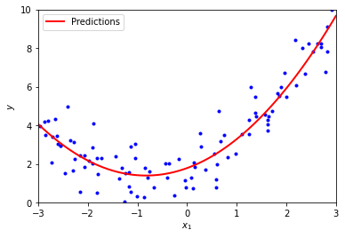
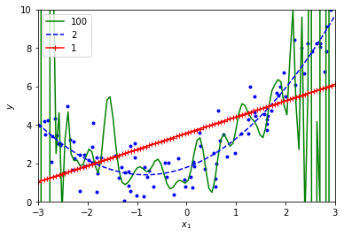
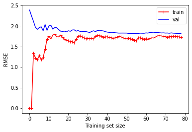
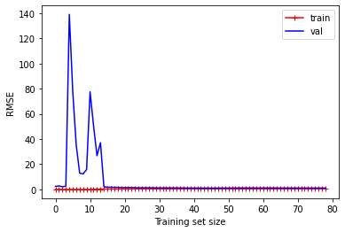
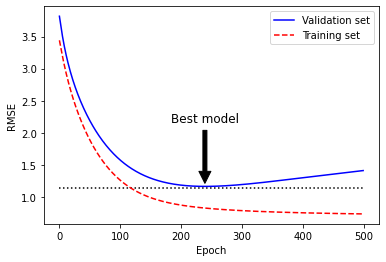
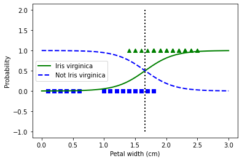
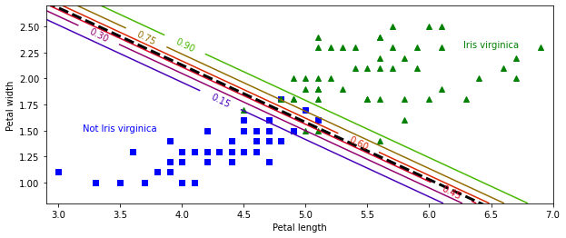
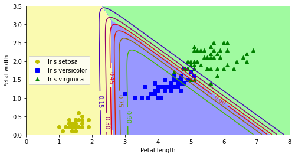
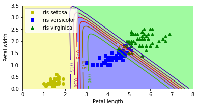

线性模型
Contents
线性模型#
import matplotlib.pyplot as plt
import numpy as np
规范方程#
np.random.seed(42)
X = 2 * np.random.rand(100, 1)
y = 4 + 3 * X + np.random.randn(100, 1)
X_b = np.c_[np.ones((100, 1)), X] # add x0 = 1 to each instance
theta_best = np.linalg.inv(X_b.T.dot(X_b)).dot(X_b.T).dot(y)
theta_best
array([[4.21509616],
[2.77011339]])
X_new = np.array([[0], [2]])
X_new_b = np.c_[np.ones((2, 1)), X_new] # add x0 = 1 to each instance
y_predict = X_new_b.dot(theta_best)
y_predict
array([[4.21509616],
[9.75532293]])
from sklearn.linear_model import LinearRegression
lin_reg = LinearRegression()
lin_reg.fit(X, y)
lin_reg.intercept_, lin_reg.coef_
(array([4.21509616]), array([[2.77011339]]))
lin_reg.predict(X_new)
array([[4.21509616],
[9.75532293]])
theta_best_svd, residuals, rank, s = np.linalg.lstsq(X_b, y, rcond=1e-6)
theta_best_svd
array([[4.21509616],
[2.77011339]])
伪逆#
np.linalg.pinv(X_b).dot(y)
array([[4.21509616],
[2.77011339]])
批量梯度下降#
eta = 0.1 # learning rate
m = 100
theta = np.random.randn(2,1) # random initialization
for iteration in range(1000):
gradients = 2/m * X_b.T.dot(X_b.dot(theta) - y)
theta = theta - eta * gradients
theta
array([[4.21509616],
[2.77011339]])
X_new_b.dot(theta)
array([[4.21509616],
[9.75532293]])
np.random.seed(42)
theta = np.random.randn(2, 1)
theta_path_bgd = []
def plot_gradient_descent(theta, eta, ax, theta_path=True):
m = len(X_b)
ax.plot(X, y, "b.")
n_iterations = 1000
for iteration in range(n_iterations):
if iteration < 10:
style = "b-" if iteration > 0 else "r--"
y_predict = X_new_b.dot(theta)
ax.plot(X_new, y_predict, style)
gradients = 2 / m * X_b.T.dot(X_b.dot(theta) - y)
theta = theta - eta * gradients
if theta_path:
theta_path_bgd.append(theta)
ax.set(xlabel="$x_1$", title=f"$η = {eta}$")
ax.axis([0, 2, 0, 15])
_, axes = plt.subplots(1,
3,
figsize=(10, 4),
sharex=True,
sharey=True,
constrained_layout=True)
etas = [.02, .1, .5]
theta_paths = [None, theta_path_bgd, None]
for ax, eta, theta_path in zip(axes.flatten(), etas, theta_paths):
plot_gradient_descent(theta, eta=eta, ax=ax, theta_path=True)
plt.show()

随机梯度下降#
from itertools import product
def learning_schedule(t):
return t0 / (t + t1)
np.random.seed(42)
X = 2 * np.random.rand(100, 1)
y = 4 + 3 * X + np.random.randn(100, 1)
X_b = np.c_[np.ones((100, 1)), X] # add x0 = 1 to each instance
X_new = np.array([[0], [2]])
np.random.seed(42)
theta_path_sgd = []
n_epochs = 50
t0, t1 = 5, 50 # learning schedule hyperparameters
m = len(X_b)
theta = np.random.randn(2, 1)
prods = product(range(n_epochs), range(m))
_, ax = plt.subplots(figsize=(6, 4))
for (epoch, i) in prods:
if epoch == 0 and i < 20:
y_predict = X_new_b.dot(theta)
style = "b-" if i > 0 else "r--"
ax.plot(X_new, y_predict, style)
random_index = np.random.randint(m)
xi = X_b[random_index:random_index + 1]
yi = y[random_index:random_index + 1]
gradients = 2 * xi.T.dot(xi.dot(theta) - yi)
eta = learning_schedule(epoch * m + i)
theta = theta - eta * gradients
theta_path_sgd.append(theta)
ax.plot(X, y, "b.")
ax.axis([0, 2, 0, 15])
ax.set(xlabel="$x_1$", ylabel="$y$")
plt.show()

theta
array([[4.21076011],
[2.74856079]])
from sklearn.linear_model import SGDRegressor
sgd_reg = SGDRegressor(max_iter=1000,
tol=1e-3,
penalty=None,
eta0=0.1,
random_state=42)
sgd_reg.fit(X, y.flatten())
SGDRegressor(eta0=0.1, penalty=None, random_state=42)In a Jupyter environment, please rerun this cell to show the HTML representation or trust the notebook.
On GitHub, the HTML representation is unable to render, please try loading this page with nbviewer.org.
SGDRegressor(eta0=0.1, penalty=None, random_state=42)
sgd_reg.intercept_, sgd_reg.coef_
(array([4.24365286]), array([2.8250878]))
小批量梯度下降#
np.random.seed(42)
theta = np.random.randn(2, 1) # random initialization
theta_path_mgd = []
t0, t1 = 200, 1000
n_iterations = 50
minibatch_size = 20
t = 0
for epoch in range(n_iterations):
shuffled_indices = np.random.permutation(m)
X_b_shuffled = X_b[shuffled_indices]
y_shuffled = y[shuffled_indices]
for i in range(0, m, minibatch_size):
t += 1
xi = X_b_shuffled[i:i + minibatch_size]
yi = y_shuffled[i:i + minibatch_size]
gradients = 2 / minibatch_size * xi.T.dot(xi.dot(theta) - yi)
eta = learning_schedule(t)
theta = theta - eta * gradients
theta_path_mgd.append(theta)
theta
array([[4.25214635],
[2.7896408 ]])
theta_path_sgd_n = np.array(theta_path_sgd)
theta_path_mgd_n = np.array(theta_path_mgd)
theta_path_bgd_n = np.array(theta_path_bgd)
_, ax = plt.subplots(figsize=(8, 4))
theta_paths = [theta_path_sgd_n, theta_path_mgd_n, theta_path_bgd_n]
styles = ["r-s", "g-+", "b-o"]
labels = ["Stochastic", "Mini-batch", "Batch"]
for thetas, style, lb in zip(theta_paths, styles, labels):
ax.plot(thetas[:, 0], thetas[:, 1], style, label=lb)
ax.legend(loc="upper left", fontsize='large')
ax.axis([2.5, 4.5, 2.3, 3.9])
ax.set(xlabel=r"$θ_0$", ylabel=r"$θ_1$")
plt.show()

多项式回归#
np.random.seed(42)
m = 100
X = 6 * np.random.rand(m, 1) - 3
y = 0.5 * X**2 + X + 2 + np.random.randn(m, 1)
_, ax = plt.subplots(figsize=(6, 4))
ax.plot(X, y, "b.")
ax.set(xlabel="$x_1$", ylabel="$y$")
ax.axis([-3, 3, 0, 10])
plt.show()

from sklearn.preprocessing import PolynomialFeatures
poly_features = PolynomialFeatures(degree=2, include_bias=False)
X_poly = poly_features.fit_transform(X)
X[0]
array([-0.75275929])
X_poly[0]
array([-0.75275929, 0.56664654])
lin_reg = LinearRegression()
lin_reg.fit(X_poly, y)
lin_reg.intercept_, lin_reg.coef_
(array([1.78134581]), array([[0.93366893, 0.56456263]]))
X_new = np.linspace(-3, 3, 100).reshape(100, 1)
X_new_poly = poly_features.transform(X_new)
y_new = lin_reg.predict(X_new_poly)
_, ax = plt.subplots(figsize=(6, 4))
ax.plot(X, y, "b.")
ax.plot(X_new, y_new, "r-", lw=2, label="Predictions")
xmin, xmax, ymin, ymax = [-3, 3, 0, 10]
ax.set(xlabel="$x_1$", ylabel="$y$", xlim=[xmin, xmax], ylim=[ymin, ymax])
ax.legend(loc="upper left", fontsize='medium')
plt.show()

from sklearn.preprocessing import StandardScaler
from sklearn.pipeline import Pipeline
styles = ["g-", "b--", "r-+"]
degrees = [100, 2, 1]
_, ax = plt.subplots(figsize=(6, 4))
ax.plot(X, y, "b.", lw=3)
for style, d in zip(styles, degrees):
poly_features = PolynomialFeatures(degree=d, include_bias=False)
std_scaler = StandardScaler()
lin_reg = LinearRegression()
polynomial_regression = Pipeline([
("poly_features", poly_features),
("std_scaler", std_scaler),
("lin_reg", lin_reg),
])
polynomial_regression.fit(X, y)
y_new = polynomial_regression.predict(X_new)
ax.plot(X_new, y_new, style, label=str(d))
xmin, xmax, ymin, ymax = [-3, 3, 0, 10]
ax.set(xlabel="$x_1$", ylabel="$y$", xlim=[xmin, xmax], ylim=[ymin, ymax])
ax.legend(loc="upper left")
plt.show()

from sklearn.metrics import mean_squared_error
from sklearn.model_selection import train_test_split
def plot_learning_curves(model, X, y, ax):
X_train, X_val, y_train, y_val = train_test_split(X,
y,
test_size=0.2,
random_state=10)
train_errors, val_errors = [], []
for m in range(1, len(X_train)):
model.fit(X_train[:m], y_train[:m])
y_train_predict = model.predict(X_train[:m])
y_val_predict = model.predict(X_val)
train_errors.append(mean_squared_error(y_train[:m], y_train_predict))
val_errors.append(mean_squared_error(y_val, y_val_predict))
ax.plot(np.sqrt(train_errors), "r-+", label="train")
ax.plot(np.sqrt(val_errors), "b-", label="val")
ax.legend(loc="upper right", fontsize='medium')
ax.set(xlabel="Training set size", ylabel="RMSE")
lin_reg = LinearRegression()
_, ax = plt.subplots(figsize=(6, 4))
plot_learning_curves(lin_reg, X, y, ax)
plt.show()

polynomial_regression = Pipeline([
("poly_features", PolynomialFeatures(degree=10, include_bias=False)),
("lin_reg", LinearRegression()),
])
_, ax = plt.subplots(figsize=(6, 4))
plot_learning_curves(polynomial_regression, X, y, ax)
plt.show()

正则化#
from sklearn.linear_model import SGDRegressor, Lasso, Ridge, ElasticNet
np.random.seed(42)
m = 20
X = 3 * np.random.rand(m, 1)
y = 1 + 0.5 * X + np.random.randn(m, 1) / 1.5
X_new = np.linspace(0, 3, 100).reshape(100, 1)
ridge_reg = Ridge(alpha=1, solver="cholesky", random_state=42)
ridge_reg.fit(X, y)
ridge_reg.predict([[1.5]])
array([[1.55071465]])
def plot_model(model_class, αs, ax, polynomial=False, **model_kargs):
styles = ("b-", "g--", "r:")
for α, style in zip(αs, styles):
model = model_class(α, **model_kargs) if α > 0 else LinearRegression()
if polynomial:
model = Pipeline([
("poly_features",
PolynomialFeatures(degree=10, include_bias=False)),
("std_scaler", StandardScaler()),
("regul_reg", model),
])
model.fit(X, y)
y_new_regl = model.predict(X_new)
ax.plot(X_new, y_new_regl, style, label=f"α = {α}")
ax.plot(X, y, "b.", lw=3)
ax.set(xlabel="$x_1$")
ax.legend(loc="upper left", fontsize='medium')
sgd_reg = SGDRegressor(penalty="l2", max_iter=1000, tol=1e-3, random_state=42)
sgd_reg.fit(X, y.ravel())
sgd_reg.predict([[1.5]])
array([1.47012588])
_, axes = plt.subplots(1, 2, figsize=(6, 3), constrained_layout=True)
plot_model(Lasso, αs=(0, 0.1, 1), ax=axes[0], random_state=42, tol=0.0001)
plot_model(Lasso,
αs=(0, 10**-7, 1),
polynomial=True,
ax=axes[1],
random_state=42,
tol=0.0001)
ax.set(ylabel="$y$")
plt.show()
/opt/homebrew/Caskroom/mambaforge/base/envs/kaggle/lib/python3.10/site-packages/sklearn/linear_model/_coordinate_descent.py:648: ConvergenceWarning: Objective did not converge. You might want to increase the number of iterations, check the scale of the features or consider increasing regularisation. Duality gap: 2.803e+00, tolerance: 9.295e-04
model = cd_fast.enet_coordinate_descent(

lasso_reg = Lasso(alpha=0.1)
lasso_reg.fit(X, y)
lasso_reg.predict([[1.5]])
array([1.53788174])
elastic_net = ElasticNet(alpha=0.1, l1_ratio=0.5, random_state=42)
elastic_net.fit(X, y)
elastic_net.predict([[1.5]])
array([1.54333232])
np.random.seed(42)
m = 100
X = 6 * np.random.rand(m, 1) - 3
y = 2 + X + 0.5 * X**2 + np.random.randn(m, 1)
X_train, X_val, y_train, y_val = train_test_split(X[:50],
y[:50].ravel(),
test_size=0.5,
random_state=10)
早停#
from copy import deepcopy
poly_scaler = Pipeline([("poly_features",
PolynomialFeatures(degree=90, include_bias=False)),
("std_scaler", StandardScaler())])
X_train_poly_scaled = poly_scaler.fit_transform(X_train)
X_val_poly_scaled = poly_scaler.transform(X_val)
sgd_reg = SGDRegressor(max_iter=1,
tol=-np.infty,
warm_start=True,
penalty=None,
learning_rate="constant",
eta0=0.0005,
random_state=42)
minimum_val_error = float("inf")
best_epoch = None
best_model = None
for epoch in range(1000):
sgd_reg.fit(X_train_poly_scaled, y_train) # continues where it left off
y_val_predict = sgd_reg.predict(X_val_poly_scaled)
val_error = mean_squared_error(y_val, y_val_predict)
if val_error < minimum_val_error:
minimum_val_error = val_error
best_epoch = epoch
best_model = deepcopy(sgd_reg)
sgd_reg = SGDRegressor(max_iter=1,
tol=-np.infty,
warm_start=True,
penalty=None,
learning_rate="constant",
eta0=0.0005,
random_state=42)
n_epochs = 500
train_errors, val_errors = [], []
for epoch in range(n_epochs):
sgd_reg.fit(X_train_poly_scaled, y_train)
y_train_predict = sgd_reg.predict(X_train_poly_scaled)
y_val_predict = sgd_reg.predict(X_val_poly_scaled)
train_errors.append(mean_squared_error(y_train, y_train_predict))
val_errors.append(mean_squared_error(y_val, y_val_predict))
best_epoch = np.argmin(val_errors)
best_val_rmse = np.sqrt(val_errors[best_epoch])
_, ax = plt.subplots(figsize=(6, 4))
ax.annotate(
'Best model',
xy=(best_epoch, best_val_rmse),
xytext=(best_epoch, best_val_rmse + 1),
ha="center",
arrowprops=dict(facecolor='black', shrink=0.05),
fontsize='large',
)
best_val_rmse -= 0.03
ax.plot([0, n_epochs], [best_val_rmse, best_val_rmse], "k:")
ax.plot(np.sqrt(val_errors), "b-", label="Validation set")
ax.plot(np.sqrt(train_errors), "r--", label="Training set")
ax.legend(loc="upper right")
ax.set(xlabel="Epoch", ylabel="RMSE")
plt.show()

best_epoch, best_model
(239,
SGDRegressor(eta0=0.0005, learning_rate='constant', max_iter=1, penalty=None,
random_state=42, tol=-inf, warm_start=True))
def make_mesh(xlims, ylims, h):
x_min, x_max = xlims
y_min, y_max = ylims
xx, yy = np.meshgrid(np.linspace(x_min, x_max, h),
np.linspace(y_min, y_max, h))
return xx, yy
xlims = [-1, 3]
ylims = [-1.5, 1.5]
t1, t2 = make_mesh(xlims, ylims, h=500)
T = np.c_[t1.flatten(), t2.flatten()]
Xr = np.array([[1, 1], [1, -1], [1, 0.5]])
yr = 2 * Xr[:, :1] + 0.5 * Xr[:, 1:]
J = (1 / len(Xr) * np.sum((T.dot(Xr.T) - yr.T)**2, axis=1)).reshape(t1.shape)
N1 = np.linalg.norm(T, ord=1, axis=1).reshape(t1.shape)
N2 = np.linalg.norm(T, ord=2, axis=1).reshape(t1.shape)
t_min_idx = np.unravel_index(np.argmin(J), J.shape)
t1_min, t2_min = t1[t_min_idx], t2[t_min_idx]
t_init = np.array([[0.25], [-1]])
def bgd_path(theta, X, y, l1, l2, core=1, eta=0.05, n_iterations=200):
path = [theta]
for iteration in range(n_iterations):
gradients = core * 2 / len(X) * X.T.dot(
X.dot(theta) - y) + l1 * np.sign(theta) + l2 * theta
theta = theta - eta * gradients
path.append(theta)
return np.array(path)
def plot_grid(ax, path_N):
ax.grid(True)
ax.axhline(y=0, color='k')
ax.axvline(x=0, color='k')
ax.plot(0, 0, "ys")
# ax.axis([t1a, t1b, t2a, t2b])
ax.plot(t1_min, t2_min, "ys")
ax.plot(path_N[:, 0], path_N[:, 1], "y--")
_, axes = plt.subplots(2, 2, sharex=True, sharey=True, figsize=(10.1, 8))
l1 = [2, 0]
l2 = [0, 2]
titles = ["Lasso", "Ridge"]
Ns = [N1, N2]
for ind, (N, l1, l2, title) in enumerate(zip(Ns, l1, l2, titles)):
JR = J + l1 * N1 + l2 * 0.5 * N2**2
tr_min_idx = np.unravel_index(np.argmin(JR), JR.shape)
t1r_min, t2r_min = t1[tr_min_idx], t2[tr_min_idx]
levelsJ = (np.exp(np.linspace(0, 1, 20)) - 1) * (np.max(J) -
np.min(J)) + np.min(J)
levelsJR = (np.exp(np.linspace(0, 1, 20)) - 1) * (np.max(JR) -
np.min(JR)) + np.min(JR)
levelsN = np.linspace(0, np.max(N), 10)
path_J = bgd_path(t_init, Xr, yr, l1=0, l2=0)
path_JR = bgd_path(t_init, Xr, yr, l1, l2)
path_N = bgd_path(np.array([[2.0], [0.5]]),
Xr,
yr,
np.sign(l1) / 3,
np.sign(l2),
core=0)
ax = axes[ind, 0]
plot_grid(ax, path_N)
ax.contourf(t1, t2, N / 2., levels=levelsN)
ax.set_title(f"$ℓ_{ind + 1}$ penalty", fontsize='large')
if ind == 1:
ax.set_xlabel(r"$θ_1$", fontsize='large')
ax.set_ylabel(r"$θ_2$", fontsize='large')
ax = axes[ind, 1]
plot_grid(ax, path_N)
ax.contourf(t1, t2, JR, levels=levelsJR, alpha=0.9)
ax.plot(path_JR[:, 0], path_JR[:, 1], "w-o")
ax.plot(t1r_min, t2r_min, "rs")
ax.set_title(title, fontsize='large')
if ind == 1:
ax.set_xlabel(r"$θ_1$", fontsize='large')
plt.show()

逻辑回归#
t = np.linspace(-10, 10, 100)
sig = 1 / (1 + np.exp(-t))
_, ax = plt.subplots(figsize=(6, 4))
ax.plot([-10, 10], [0, 0], "k-")
ax.plot([-10, 10], [0.5, 0.5], "k:")
ax.plot([-10, 10], [1, 1], "k:")
ax.plot([0, 0], [-1.1, 1.1], "k-")
ax.plot(t, sig, "b-", lw=2, label=r"$σ(t) = \frac{1}{1 + e^{-t}}$")
ax.set(xlabel="t")
ax.legend(loc="upper left")
<matplotlib.legend.Legend at 0x11f9c5990>

from sklearn.datasets import load_iris
iris = load_iris()
list(iris.keys())
['data',
'target',
'frame',
'target_names',
'DESCR',
'feature_names',
'filename',
'data_module']
print(iris.DESCR)
.. _iris_dataset:
Iris plants dataset
--------------------
**Data Set Characteristics:**
:Number of Instances: 150 (50 in each of three classes)
:Number of Attributes: 4 numeric, predictive attributes and the class
:Attribute Information:
- sepal length in cm
- sepal width in cm
- petal length in cm
- petal width in cm
- class:
- Iris-Setosa
- Iris-Versicolour
- Iris-Virginica
:Summary Statistics:
============== ==== ==== ======= ===== ====================
Min Max Mean SD Class Correlation
============== ==== ==== ======= ===== ====================
sepal length: 4.3 7.9 5.84 0.83 0.7826
sepal width: 2.0 4.4 3.05 0.43 -0.4194
petal length: 1.0 6.9 3.76 1.76 0.9490 (high!)
petal width: 0.1 2.5 1.20 0.76 0.9565 (high!)
============== ==== ==== ======= ===== ====================
:Missing Attribute Values: None
:Class Distribution: 33.3% for each of 3 classes.
:Creator: R.A. Fisher
:Donor: Michael Marshall (MARSHALL%PLU@io.arc.nasa.gov)
:Date: July, 1988
The famous Iris database, first used by Sir R.A. Fisher. The dataset is taken
from Fisher's paper. Note that it's the same as in R, but not as in the UCI
Machine Learning Repository, which has two wrong data points.
This is perhaps the best known database to be found in the
pattern recognition literature. Fisher's paper is a classic in the field and
is referenced frequently to this day. (See Duda & Hart, for example.) The
data set contains 3 classes of 50 instances each, where each class refers to a
type of iris plant. One class is linearly separable from the other 2; the
latter are NOT linearly separable from each other.
.. topic:: References
- Fisher, R.A. "The use of multiple measurements in taxonomic problems"
Annual Eugenics, 7, Part II, 179-188 (1936); also in "Contributions to
Mathematical Statistics" (John Wiley, NY, 1950).
- Duda, R.O., & Hart, P.E. (1973) Pattern Classification and Scene Analysis.
(Q327.D83) John Wiley & Sons. ISBN 0-471-22361-1. See page 218.
- Dasarathy, B.V. (1980) "Nosing Around the Neighborhood: A New System
Structure and Classification Rule for Recognition in Partially Exposed
Environments". IEEE Transactions on Pattern Analysis and Machine
Intelligence, Vol. PAMI-2, No. 1, 67-71.
- Gates, G.W. (1972) "The Reduced Nearest Neighbor Rule". IEEE Transactions
on Information Theory, May 1972, 431-433.
- See also: 1988 MLC Proceedings, 54-64. Cheeseman et al"s AUTOCLASS II
conceptual clustering system finds 3 classes in the data.
- Many, many more ...
X = iris["data"][:, 3:] # petal width
y = (iris["target"] == 2).astype(int) # 1 if Iris virginica, else 0
from sklearn.linear_model import LogisticRegression
log_reg = LogisticRegression(solver="lbfgs", random_state=42)
log_reg.fit(X, y)
LogisticRegression(random_state=42)In a Jupyter environment, please rerun this cell to show the HTML representation or trust the notebook.
On GitHub, the HTML representation is unable to render, please try loading this page with nbviewer.org.
LogisticRegression(random_state=42)
X_new = np.linspace(0, 3, 1000).reshape(-1, 1)
y_proba = log_reg.predict_proba(X_new)
decision_boundary = X_new[y_proba[:, 1] >= 0.5][0]
_, ax = plt.subplots(figsize=(6, 4))
ax.plot(X[y == 0], y[y == 0], "bs")
ax.plot(X[y == 1], y[y == 1], "g^")
ax.plot([decision_boundary, decision_boundary], [-1, 2], "k:", lw=2)
ax.plot(X_new, y_proba[:, 1], "g-", lw=2, label="Iris virginica")
ax.plot(X_new, y_proba[:, 0], "b--", lw=2, label="Not Iris virginica")
ax.set(xlabel="Petal width (cm)", ylabel="Probability")
ax.legend(loc="center left", fontsize='medium')
plt.show()

decision_boundary
array([1.66066066])
log_reg.predict([[1.7], [1.5]])
array([1, 0])
X = iris["data"][:, (2, 3)] # petal length, petal width
y = (iris["target"] == 2).astype('int')
log_reg = LogisticRegression(solver="lbfgs", C=10**10, random_state=42)
log_reg.fit(X, y)
LogisticRegression(C=10000000000, random_state=42)In a Jupyter environment, please rerun this cell to show the HTML representation or trust the notebook.
On GitHub, the HTML representation is unable to render, please try loading this page with nbviewer.org.
LogisticRegression(C=10000000000, random_state=42)
def make_mesh(xlims, ylims, h):
x = np.arange(xlims[0], xlims[1], h)
y = np.arange(ylims[0], ylims[1], h)
xx, yy = np.meshgrid(x, y)
return xx, yy
def make_zz(x0, x1):
X_new = np.c_[x0.flatten(), x1.flatten()]
y_proba = log_reg.predict_proba(X_new)
zz = y_proba[:, 1].reshape(x0.shape)
return zz
x0, x1 = np.meshgrid(
np.linspace(2.9, 7, 500).reshape(-1, 1),
np.linspace(0.8, 2.7, 200).reshape(-1, 1),
)
X_new = np.c_[x0.ravel(), x1.ravel()]
y_proba = log_reg.predict_proba(X_new)
plt.figure(figsize=(10, 4))
plt.plot(X[y == 0, 0], X[y == 0, 1], "bs")
plt.plot(X[y == 1, 0], X[y == 1, 1], "g^")
zz = y_proba[:, 1].reshape(x0.shape)
contour = plt.contour(x0, x1, zz, cmap=plt.cm.brg)
left_right = np.array([2.9, 7])
boundary = -(log_reg.coef_[0][0] * left_right +
log_reg.intercept_[0]) / log_reg.coef_[0][1]
plt.clabel(contour, inline=1)
plt.plot(left_right, boundary, "k--", lw=3)
plt.text(3.5, 1.5, "Not Iris virginica", color="b", ha="center")
plt.text(6.5, 2.3, "Iris virginica", color="g", ha="center")
plt.xlabel("Petal length")
plt.ylabel("Petal width")
plt.axis([2.9, 7, 0.8, 2.7])
plt.show()

X = iris["data"][:, (2, 3)] # petal length, petal width
y = iris["target"]
softmax_reg = LogisticRegression(multi_class="multinomial",solver="lbfgs", C=10, random_state=42)
softmax_reg.fit(X, y)
LogisticRegression(C=10, multi_class='multinomial', random_state=42)In a Jupyter environment, please rerun this cell to show the HTML representation or trust the notebook.
On GitHub, the HTML representation is unable to render, please try loading this page with nbviewer.org.
LogisticRegression(C=10, multi_class='multinomial', random_state=42)
from matplotlib.colors import ListedColormap
custom_cmap = ListedColormap(['#fafab0', '#9898ff', '#a0faa0'])
_, ax = plt.subplots(figsize=(8, 4))
labels = ["Iris setosa", "Iris versicolor", "Iris virginica"]
styles = ["yo", "bs", "g^"]
for ind, (style, lb) in enumerate(zip(styles, labels)):
ax.plot(X[y == ind, 0], X[y == ind, 1], style, label=lb)
ax.set(xlabel="Petal length", ylabel="Petal width")
ax.legend(loc="center left", fontsize='medium')
x0, x1 = np.meshgrid(
np.linspace(0, 8, 500).reshape(-1, 1),
np.linspace(0, 3.5, 200).reshape(-1, 1),
)
X_new = np.c_[x0.flatten(), x1.flatten()]
y_predict = softmax_reg.predict(X_new)
zz = y_predict.reshape(x0.shape)
ax.contourf(x0, x1, zz, cmap=custom_cmap)
y_proba = softmax_reg.predict_proba(X_new)
zz1 = y_proba[:, 1].reshape(x0.shape)
contour = ax.contour(x0, x1, zz1, cmap=plt.cm.brg)
ax.clabel(contour, inline=True)
plt.show()

softmax_reg.predict([[5, 2]])
array([2])
softmax_reg.predict_proba([[5, 2]])
array([[6.38014896e-07, 5.74929995e-02, 9.42506362e-01]])
习题#
Softmax 回归#
X = iris["data"][:, (2, 3)] # petal length, petal width
y = iris["target"]
X_with_bias = np.c_[np.ones([len(X), 1]), X]
np.random.seed(2042)
test_ratio = 0.2
validation_ratio = 0.2
total_size = len(X_with_bias)
test_size = int(total_size * test_ratio)
validation_size = int(total_size * validation_ratio)
train_size = total_size - test_size - validation_size
rnd_indices = np.random.permutation(total_size)
X_train = X_with_bias[rnd_indices[:train_size]]
y_train = y[rnd_indices[:train_size]]
X_valid = X_with_bias[rnd_indices[train_size:-test_size]]
y_valid = y[rnd_indices[train_size:-test_size]]
X_test = X_with_bias[rnd_indices[-test_size:]]
y_test = y[rnd_indices[-test_size:]]
热一编码#
def to_one_hot(y):
n_classes = y.max() + 1
m = len(y)
Y_one_hot = np.zeros((m, n_classes))
Y_one_hot[np.arange(m), y] = 1
return Y_one_hot
y_train[:10]
array([0, 1, 2, 1, 1, 0, 1, 1, 1, 0])
to_one_hot(y_train[:10])
array([[1., 0., 0.],
[0., 1., 0.],
[0., 0., 1.],
[0., 1., 0.],
[0., 1., 0.],
[1., 0., 0.],
[0., 1., 0.],
[0., 1., 0.],
[0., 1., 0.],
[1., 0., 0.]])
Y_train_one_hot = to_one_hot(y_train)
Y_valid_one_hot = to_one_hot(y_valid)
Y_test_one_hot = to_one_hot(y_test)
Softmax 方程#
\(σ\left(\mathbf{s}(\mathbf{x})\right)_k = \dfrac{\exp\left(s_k(\mathbf{x})\right)}{∑\limits_{j=1}^{K}{\exp\left(s_j(\mathbf{x})\right)}}\)
def softmax(logits):
exps = np.exp(logits)
exp_sums = np.sum(exps, axis=1, keepdims=True)
return exps / exp_sums
n_inputs = X_train.shape[1] # == 3 (2 features plus the bias term)
n_outputs = len(np.unique(y_train)) # == 3 (3 iris classes)
梯度下降#
\[
J(Θ) =
- \dfrac{1}{m}∑\limits_{i=1}^{m}∑\limits_{k=1}^{K}{y_k^{(i)}\log\left(\hat{p}_k^{(i)}\right)}
\]
And the equation for the gradients:
\(\nabla_{θ^{(k)}} \, J(Θ) = \dfrac{1}{m} ∑\limits_{i=1}^{m}{ \left ( \hat{p}^{(i)}_k - y_k^{(i)} \right ) \mathbf{x}^{(i)}}\)
Note that \(\log\left(\hat{p}_k^{(i)}\right)\) may not be computable if \(\hat{p}_k^{(i)} = 0\). So we will add a tiny value \(ϵ\) to \(\log\left(\hat{p}_k^{(i)}\right)\) to avoid getting nan values.
eta = 0.01
n_iterations = 5001
m = len(X_train)
epsilon = 1e-7
Theta = np.random.randn(n_inputs, n_outputs)
for iteration in range(n_iterations):
logits = X_train.dot(Theta)
Y_proba = softmax(logits)
if iteration % 500 == 0:
loss = -np.mean(np.sum(Y_train_one_hot * np.log(Y_proba + epsilon), axis=1))
print(iteration, loss)
error = Y_proba - Y_train_one_hot
gradients = 1/m * X_train.T.dot(error)
Theta -= eta * gradients
0 5.446205811872683
500 0.8350062641405651
1000 0.6878801447192402
1500 0.6012379137693314
2000 0.5444496861981872
2500 0.5038530181431525
3000 0.47292289721922487
3500 0.44824244188957774
4000 0.4278651093928793
4500 0.41060071429187134
5000 0.3956780375390374
Theta
array([[ 3.32094157, -0.6501102 , -2.99979416],
[-1.1718465 , 0.11706172, 0.10507543],
[-0.70224261, -0.09527802, 1.4786383 ]])
logits = X_valid.dot(Theta)
Y_proba = softmax(logits)
y_predict = np.argmax(Y_proba, axis=1)
accuracy_score = np.mean(y_predict == y_valid)
accuracy_score
0.9666666666666667
学习率#
eta = 0.1
n_iterations = 5001
m = len(X_train)
epsilon = 1e-7
alpha = 0.1 # regularization hyperparameter
Theta = np.random.randn(n_inputs, n_outputs)
for iteration in range(n_iterations):
logits = X_train.dot(Theta)
Y_proba = softmax(logits)
if iteration % 500 == 0:
xentropy_loss = -np.mean(np.sum(Y_train_one_hot * np.log(Y_proba + epsilon), axis=1))
l2_loss = 1/2 * np.sum(np.square(Theta[1:]))
loss = xentropy_loss + alpha * l2_loss
print(iteration, loss)
error = Y_proba - Y_train_one_hot
gradients = 1/m * X_train.T.dot(error) + np.r_[np.zeros([1, n_outputs]), alpha * Theta[1:]]
Theta = Theta - eta * gradients
0 6.629842469083912
500 0.5339667976629505
1000 0.5036400750148942
1500 0.4946891059460321
2000 0.4912968418075477
2500 0.48989924700933296
3000 0.48929905984511984
3500 0.48903512443978603
4000 0.4889173621830818
4500 0.4888643337449303
5000 0.4888403120738818
正则化#
logits = X_valid.dot(Theta)
Y_proba = softmax(logits)
y_predict = np.argmax(Y_proba, axis=1)
accuracy_score = np.mean(y_predict == y_valid)
accuracy_score
1.0
eta = 0.1
n_iterations = 5001
m = len(X_train)
epsilon = 1e-7
alpha = 0.1 # regularization hyperparameter
best_loss = np.infty
Theta = np.random.randn(n_inputs, n_outputs)
for iteration in range(n_iterations):
logits = X_train.dot(Theta)
Y_proba = softmax(logits)
error = Y_proba - Y_train_one_hot
gradients = 1/m * X_train.T.dot(error) + np.r_[np.zeros([1, n_outputs]), alpha * Theta[1:]]
Theta = Theta - eta * gradients
logits = X_valid.dot(Theta)
Y_proba = softmax(logits)
xentropy_loss = -np.mean(np.sum(Y_valid_one_hot * np.log(Y_proba + epsilon), axis=1))
l2_loss = 1/2 * np.sum(np.square(Theta[1:]))
loss = xentropy_loss + alpha * l2_loss
if iteration % 500 == 0:
print(iteration, loss)
if loss < best_loss:
best_loss = loss
else:
print(iteration - 1, best_loss)
print(iteration, loss, "early stopping!")
break
0 4.7096017363419875
500 0.5739711987633518
1000 0.5435638529109128
1500 0.5355752782580261
2000 0.5331959249285544
2500 0.5325946767399383
2765 0.5325460966791898
2766 0.5325460971327977 early stopping!
预测#
logits = X_valid.dot(Theta)
Y_proba = softmax(logits)
y_predict = np.argmax(Y_proba, axis=1)
accuracy_score = np.mean(y_predict == y_valid)
accuracy_score
1.0
_, ax = plt.subplots(figsize=(6, 3))
labels = ["Iris setosa", "Iris versicolor", "Iris virginica"]
styles = ["yo", "bs", "g^"]
for ind, (style, lb) in enumerate(zip(styles, labels)):
ax.plot(X[y == ind, 0], X[y == ind, 1], style, label=lb)
custom_cmap = ListedColormap(['#fafab0', '#9898ff', '#a0faa0'])
ax.contourf(x0, x1, zz, cmap=custom_cmap)
contour = ax.contour(x0, x1, zz1, cmap=plt.cm.brg)
ax.clabel(contour, inline=1, fontsize='small')
ax.set(xlabel="Petal length", ylabel="Petal width")
ax.legend(loc="upper left", fontsize='medium')
plt.show()

logits = X_test.dot(Theta)
Y_proba = softmax(logits)
y_predict = np.argmax(Y_proba, axis=1)
accuracy_score = np.mean(y_predict == y_test)
accuracy_score
0.9333333333333333